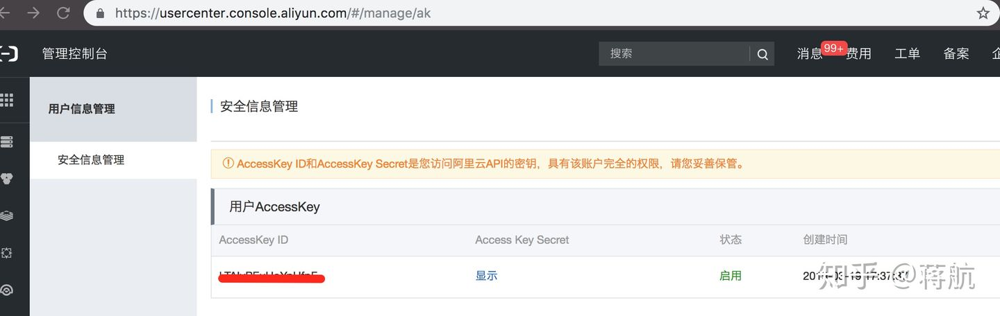
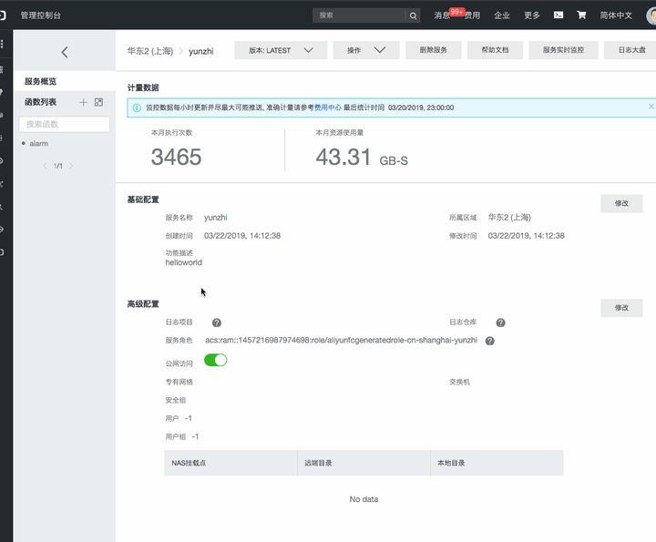
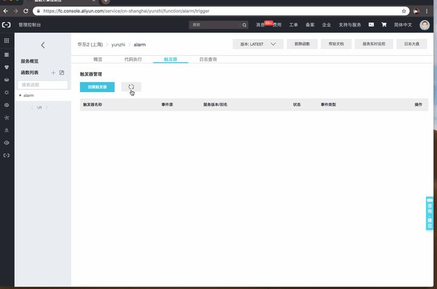

最近尝试将应用的页面 JS 错误报警功能通过 Serverless 来实现。本文主要介绍一下具体实现过程，以及遇到的一些问题。
报警功能的需求也很简单，就是定时（如每隔 1 分钟）去读取 ARMS 的错误日志，如果有错误日志，则通过钉钉消息发送错误详情进行报警。
在这之前，我通过定时任务实现了该功能。从成本上来说，这种方案就需要单独申请一台服务器资源；而且定时任务只在对应的时间才执行，这件意味着，服务器有很长的时间都是空闲的，这就造成了资源的浪费。而使用 Serverless，就不需要再申请服务器，函数只需要在需要的时候执行，这就大大节省了成本。
总的来说，我觉得函数计算的优势就是：
- 对于开发者，只需要关系业务逻辑的实现，不需要关心代码所运行的环境、硬件资源、以及运维
- 节省成本
通过 Serverless 实现前端日志报警，依赖的云服务是 阿里云函数计算 ，依赖的其他工具还有：
- 函数计算的命令行工具 fun ，用于本地调试、部署函数
- 函数计算的可交互式工具 fcli ，用于本地测试
- 阿里云 JS SDK aliyun-sdk-js ，用于读取 SLS 日志，ARMS 的日志是存储在 SLS 中的
- 编程语言使用 Node.js
安装和配置 fun 🔗
初次使用需要先安装 fun
$ npm install @alicloud/fun -g
安装完成之后，需要通过 fun config 配置一下账号信息 Aliyun Account ID Aliyun Access Key ID Aliyun Secret Access Key 以及默认的地域。地域这里有个需要注意的是，如果需要使用 SLS 记录函数日志，则需要 SLS 和函数服务在同一个地域。这里稍后会详细介绍。
$ fun config
? Aliyun Account ID ******
? Aliyun Access Key ID ******
? Aliyun Secret Access Key ******
? Default region name cn-shanghai
? The timeout in seconds for each SDK client invoking 60
? The maximum number of retries for each SDK client 6
Aliyun Account ID Aliyun Access Key ID Aliyun Secret Access Key 可以在阿里云的控制台中查找和设置。
![Aliyun Account ID]
Aliyun Access Key ID Aliyun Secret Access Key

函数初始化 🔗
先通过 fun 创建一个 Node.js 的 demo，之后可以在这个 demo 的基础上进行开发。
$ fun init -n alarm helloworld-nodejs8
Start rendering template...
+ /Users/jh/inbox/func/code/alarm
+ /Users/jh/inbox/func/code/alarm/index.js
+ /Users/jh/inbox/func/code/alarm/template.yml
finish rendering template.
执行成功后，分别创建了两个文件 index.js 和 template.yml。
其中 template.yml 是函数的规范文档，在里面定义了函数需要的资源、触发函数的事件等等。
template.yml 🔗
接下来简单看看生成的默认的 template.yml 配置文件。
ROSTemplateFormatVersion: '2015-09-01'
Transform: 'Aliyun::Serverless-2018-04-03'
Resources:
alarm:
Type: 'Aliyun::Serverless::Service'
Properties:
Description: 'helloworld'
alarm:
Type: 'Aliyun::Serverless::Function'
Properties:
Handler: index.handler
Runtime: nodejs8
CodeUri: 'index.js'
首先定义了规范文档的版本 ROSTemplateFormatVersion 和 Transform，这两个都不用修改。
Resources 里面定义了一个名为 alarm 的函数服务（Type: Aliyun::Serverless::Service 表示该属性为函数服务），并且该服务里面定义了名为 alarm 的函数（Type: 'Aliyun::Serverless::Function'表示该属性为函数）。
函数服务里面可以包含多个函数，就相当于是一个函数组。后面我们会提到的函数日志，是配置到函数服务上的。函数服务里面的所有函数，都用同一个日志。
可以根据实际情况修改函数服务名和函数名。下面就将函数服务名称改为 yunzhi，函数名依旧保留为 alarm。
ROSTemplateFormatVersion: '2015-09-01'
Transform: 'Aliyun::Serverless-2018-04-03'
Resources:
yunzhi: # 函数服务的名称
Type: 'Aliyun::Serverless::Service' # 表示 yunzhi 是一个函数服务
Properties:
Description: 'helloworld' # 函数服务的描述
alarm: # 函数的名称
Type: 'Aliyun::Serverless::Function' # 表示 alarm 是一个函数
Properties:
Handler: index.handler # 函数的调用入口
Runtime: nodejs8 # 函数的运行环境
CodeUri: 'index.js' # 代码的目录
alarm 函数里面的 Properties 定义了函数的调用入口、运行环境等，如上面的注释所示。
关于 template.yml 的配置详见
Serverless Application Model
。
index.js 🔗
index.js 文件就是函数的调用入口了。index.handler 就表示，函数的调用的是 index.[extension] 文件中的 handler 函数。
module.exports.handler = function(event, context, callback) {
console.log('hello world');
callback(null, 'hello world');
};
初始化之后的代码就上面这几行，很简单。主要是理解上面的几个参数。
event调用函数时传入的参数context函数运行时的一些信息callback函数执行之后的回调-
- 必须要要调用
callback函数，才会被认为函数执行结束。如果没有调用，则函数会一直运行到超时
- 必须要要调用
-
callback调用之后，函数就结束了
-
callback的第一个参数是error对象，这和 JS 回调编程的思想一致
-
关于 event 和 context，详见
Nodejs 函数入口
。
实现报警功能的主要逻辑，就写在 index.js 里面。具体的实现，就不细说，下面用伪代码来描述：
alarm/alarm.js
// alarm/alarm.js
// 实现报警功能
module.exports = function() {
return new Promise((resolve, reject) => {
// 查询 SLS 日志
// - 如果没有错误日志，则 resolve
// - 如果有错误日志，则发送钉钉消息
// - 如果钉钉消息发送失败，则 reject
// - 如果钉钉消息发送成功，则 resolve
resolve();
})
}
alarm/index.js
// alarm/index.js
// 调用报警函数
const alarm = require('./alarm');
module.exports.handler = function(event, context, callback) {
alarm()
.then(() => {
callback(null, 'success');
})
.catch(error => {
callback(error);
})
};
CodeUri 🔗
如果函数里面引入了自定义的其他模块，比如在 index.js 里面引入了 alarm.js const alarm = require('./alarm');，则需要修改默认的 codeUri 为当前代码目录 ./。否则默认的 codeUri 只定义了 index.js，部署的时候只会部署 index.js。
ROSTemplateFormatVersion: '2015-09-01'
Transform: 'Aliyun::Serverless-2018-04-03'
Resources:
yunzhi: # 函数服务的名称
Type: 'Aliyun::Serverless::Service' # 表示 yunzhi 是一个函数服务
Properties:
Description: 'helloworld' # 函数服务的描述
alarm: # 函数的名称
Type: 'Aliyun::Serverless::Function' # 表示 alarm 是一个函数
Properties:
Handler: index.handler # 函数的调用入口
Runtime: nodejs8 # 函数的运行环境
CodeUri: './' # 代码的目录
如果没有修改 CodeUri，则会有类似下面的报错
$ fun local invoke alarm
FC Invoke End RequestId: 16e3099e-6a40-43cb-99a0-f0c75f3422c6
{
"errorMessage": "Cannot find module './alarm'",
"errorType": "Error",
"stackTrace": [
"Error: Cannot find module './alarm'",
"at Module._resolveFilename (module.js:536:15)",
"at Module._load (module.js:466:25)",
"at Module.require (module.js:579:17)",
"at require (internal/module.js:11:18)",
"at (/code/index.js:9:15)",
"at Module._compile (module.js:635:30)",
"at Module._extensions..js (module.js:646:10)",
"at Module.load (module.js:554:32)",
"at tryModuleLoad (module.js:497:12)",
"at Module._load (module.js:489:3)"
]
}
fun local invoke alarm 是本地调试的命令，接下来会讲到。
本地调试 🔗
在开发过程中，肯定需要本地调试。fun 提供了 fun local 支持本地调试。
fun local 的命令格式为 fun local invoke [options] <[service/]function>，其中 options 和 service 都可以忽略。比如调试上面的报警功能的命令就是 fun local invoke alarm。
需要注意的是，本地调试需要先安装 docker。
$ brew cask install docker
安装成功后启动 docker。
如果 docker 没有启动，运行 fun local 可能会有如下报错
$ fun local invoke alarm
Reading event data from stdin, which can be ended with Enter then Ctrl+D
(you can also pass it from file with -e)
connect ENOENT /var/run/docker.sock
正常的输出如下
$ fun local invoke alarm
Reading event data from stdin, which can be ended with Enter then Ctrl+D
(you can also pass it from file with -e)
skip pulling image aliyunfc/runtime-nodejs8:1.5.0...
FC Invoke Start RequestId: 9360768c-5c52-4bf5-978b-774edfce9e40
load code for handler:index.handler
FC Invoke End RequestId: 9360768c-5c52-4bf5-978b-774edfce9e40
success
RequestId: 9360768c-5c52-4bf5-978b-774edfce9e40 Billed Duration: 79 ms Memory Size: 1998 MB Max Memory Used: 54 MB
第一次调试的话，会安装 runtime 的镜像，可能需要点时间。默认的 Docker 镜像下载会很慢，可以使用国内的加速站点加速下载。
出现 Reading event data from stdin, which can be ended with Enter then Ctrl+D 的提示时，如果不需要输入，可以按 ctrl+D 跳过。
函数部署 🔗
开发完成之后，就需要将函数部署到阿里云的函数计算上面了。部署可以通过 fun deploy 命令。
前面已经在安装 fun 之后，通过 fun config 命令配置了阿里云的账号和地域信息，fun deploy 会将函数自动部署到对应的账号和地域下。
在 template.yml 中，也配置了函数的服务名和函数名。如果在函数计算中没有对应的服务或函数，fun deploy 会自动创建；如果已经存在，则会更新。
$ fun deploy
using region: cn-shanghai
using accountId: ***********4698
using accessKeyId: ***********UfpF
using timeout: 60
Waiting for service yunzhi to be deployed...
Waiting for function alarm to be deployed...
Waiting for packaging function alarm code...
package function alarm code done
function alarm deploy success
service yunzhi deploy success
部署成功之后，就可以在函数计算的控制台中看到对应的函数服务和函数了。目前还没有配置触发器，可以手动在控制台中点击“执行”按钮来执行函数。

触发器 🔗
对于应用到生产环境的函数，肯定不会像上面一样手动去执行它，而是通过配置触发器去执行。触发器就相当于是一个特定的事件，当函数计算接收到该事件的时候，就去调用对应的函数。
阿里云的函数计算支持 HTTP 触发器（接收到 HTTP 请求之后调用函数）、定时触发器（定时调用函数）、OSS 触发器等等。详见 触发器列表 。
对于报警功能，需要用到的是定时触发器，因为需要间隔一定的时间就调用函数。
触发器是配置到函数中的，可以通过函数的 Event 属性去配置
ROSTemplateFormatVersion: '2015-09-01'
Transform: 'Aliyun::Serverless-2018-04-03'
Resources:
yunzhi:
Type: 'Aliyun::Serverless::Service'
Properties:
Description: 'helloworld'
alarm:
Type: 'Aliyun::Serverless::Function'
Properties:
Handler: index.handler
Runtime: nodejs8
CodeUri: './'
Events: # 配置 alarm 函数的触发器
TimeTrigger: # 触发器的名称
Type: Timer # 表示该触发器是定时触发器
Properties:
CronExpression: "0 0/1 * * * *" # 每 1 分钟执行一次
Enable: true # 是否启用该定时触发器
上面的配置，就为 alarm 配置了一个名为 TimeTrigger 的定时触发器，触发器每隔 1 分钟执行一次，也就是每隔 1 分钟调用一次函数。
配置完成之后，再执行 fun deploy 就可以发布函数及触发器到函数计算上。

这里需要注意的是，阿里云函数计算服务目前支持的触发器，最小的间隔时间为 1 分钟。如果小于 1 分钟，则无法设置成功。定时触发器的详细介绍可参考文档 定时触发函数 。
函数日志 🔗
对于 serverless 应用，虽然不用关心运维了，其实我们也并不知道我们的函数运行在哪台服务器上。这个时候，函数的日志就尤为重要了。没有日志，我们很难知道程序运行状态，遇到问题更是无从下手。
所以接下来需要对函数配置日志。阿里云的函数计算可以使用 阿里云日志服务 SLS 来存储日志。如果要存储日志，则需要先开通 日志服务 。
不存在日志库 🔗
如果是第一次使用日志服务，则肯定不存在日志库。可以在 template.yml 像定义函数服务一样，通过 Resource 来定义日志资源。
前面也提到，函数日志是配置到对应的服务上的，具体配置也很简单，就是通过函数服务的 LogConfig 属性来配置。
完整的 template.yml 如下
ROSTemplateFormatVersion: '2015-09-01'
Transform: 'Aliyun::Serverless-2018-04-03'
Resources:
log-yunzhi: # 日志项目名称为 log-yunzhi
Type: 'Aliyun::Serverless::Log' # 表示该资源是阿里云的日志服务
Properties:
Description: 'yunzhi function service log project'
log-yunzhi-store: # 日志的 logstore
Type: 'Aliyun::Serverless::Log::Logstore'
Properties:
TTL: 10
ShardCount: 1
log-another-logstore: # 日志的另一个 logstore
Type: 'Aliyun::Serverless::Log::Logstore'
Properties:
TTL: 10
ShardCount: 1
yunzhi:
Type: 'Aliyun::Serverless::Service'
Properties:
Description: 'helloworld'
LogConfig: # 配置函数的日志
Project: 'log-yunzhi' # 存储函数日志 SLS 项目: log-yunzhi
Logstore: 'log-yunzhi-store' # 存储函数日志的 SLS logstore: log-yunzhi-store
alarm:
Type: 'Aliyun::Serverless::Function'
Properties:
Handler: index.handler
Runtime: nodejs8
CodeUri: './'
Events:
TimeTrigger:
Type: Timer
Properties:
CronExpression: "0 0/1 * * * *"
Enable: true
在上面的配置中，就定义了名为 log-yunzhi 的日志项目（Project），并且在该 Project 中创建了两个日志仓库（LogStore）：log-yunzhi-store 和 log-yunzhi-store。一个 Project 可以包含多个 LogStore。
注意：日志项目的名称必须全局唯一。 即配置中，og-yunzhi 这个项目名称是全局唯一的。
执行 fun deploy 之后，就会自动在函数服务对应的地域创建日志 Project 及日志 logstore，同时也会自动为 logstore 加上全文索引，然后自动为函数服务配置日志仓库。
之后函数的运行日志都会存储在对应的 logstore 里。
$ fun deploy
using region: cn-shanghai
using accountId: ***********4698
using accessKeyId: ***********UfpF
using timeout: 60
Waiting for log service project log-yunzhi to be deployed...
Waiting for log service logstore log-yunzhi-store to be deployed...
retry 1 times
Waiting for log service logstore log-yunzhi-store default index to be deployed...
log service logstore log-yunzhi-store default index deploy success
log serivce logstore log-yunzhi-store deploy success
Waiting for log service logstore log-another-logstore to be deployed...
Waiting for log service logstore log-another-logstore default index to be deployed...
log service logstore log-another-logstore default index deploy success
log serivce logstore log-another-logstore deploy success
log serivce project log-yunzhi deploy success
Waiting for service yunzhi to be deployed...
Waiting for function alarm to be deployed...
Waiting for packaging function alarm code...
package function alarm code done
Waiting for Timer trigger TimeTrigger to be deployed...
function TimeTrigger deploy success
function alarm deploy success
service yunzhi deploy success
如果日志库已经存在，且定义了日志资源，则 fun deploy 会按照 template.yml 中的配置更新日志库。
存在日志库 🔗
如果日志库已经存在，即已经在日志服务中创建了日志项目 Project 和日志库 Logstore ，就可以直接为函数服务添加 LogConfig，不用再定义日志资源。
注意，日志库需要和函数服务在同一个地域 Region。否则不能部署成功。
下面是一个配置函数日志到已经存在的 Project 和 Logstore 中的例子。
ROSTemplateFormatVersion: '2015-09-01'
Transform: 'Aliyun::Serverless-2018-04-03'
Resources:
yunzhi:
Type: 'Aliyun::Serverless::Service'
Properties:
Description: 'helloworld'
LogConfig: # 配置函数的日志
Project: 'log-yunzhi-exist' # 存储函数日志到已经存在的 Project: log-yunzhi-exist
Logstore: 'logstore-exist' # 存储函数日志到已经存在的 logstore: logstore-exist
alarm:
Type: 'Aliyun::Serverless::Function'
Properties:
Handler: index.handler
Runtime: nodejs8
CodeUri: './'
Events:
TimeTrigger:
Type: Timer
Properties:
CronExpression: "0 0/1 * * * *"
Enable: true
如果日志库和函数服务不在同一个地域，函数服务就会找不到日志库，fun deploy 也会报错。如下所示，yunzhi-log-qingdao 是我创建的一个青岛地域的日志 Project。
$ fun deploy
using region: cn-shanghai
using accountId: ***********4698
using accessKeyId: ***********UfpF
using timeout: 60
Waiting for service yunzhi to be deployed...
retry 1 times
retry 2 times
retry 3 times
retry 4 times
retry 5 times
retry 6 times
retry 7 times
PUT /services/yunzhi failed with 400. requestid: 6af2afb8-cbd9-0d3e-bf16-fe623834b4ee, message: project 'yunzhi-log-qingdao' does not exist.
其他问题 🔗
代码版本的管理 🔗
在实现报警功能的过程中，我依旧使用了 GitLab 来存储代码。每次开发完成之后，将代码 push 到 GitLab，然后再将代码部署到函数计算上。不过这两个过程是独立的，还是不那么方便。
环境问题 🔗
一般我们开发的时候，需要日常、预发、线上多个环境部署、测试。阿里云函数计算是一个云产品，没有环境的区分。但对于报警整个功能，我也没有去区分环境，只是本地开发的时候，将报警消息发到一个测试的钉钉群，所以也没有特别去关注。
经济成本 🔗
使用函数计算的经济成本，相比于购买云服务器部署应用，成本低了非常多。
本文中涉及到函数计算和日志服务两个云产品，都有一定的免费额度。其中函数计算每月前 100 万次函数调用免费，日志服务每月也有 500M 的免费存储空间和读写流量。所以只用来测试或者实现一些调用量很小的功能，基本是免费的。
总结 🔗
配置了函数的日志之后，将函数部署到函数计算上，就算是正式发布上线了。
现在回过头来看，整个流程还算比较简单。但从零开始一步一步到部署上线的过程，还是遇到了很多问题。比如文中的许多注意事项，都是在不断尝试中得出的结论。
最近 serverless 这个话题也很火热，也期待这个技术即将带来的变革。